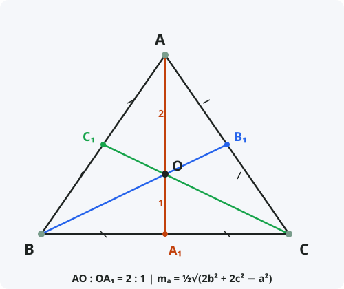

Теорема о медианах треугольника
Формулировка
Медианы треугольника пересекаются в одной точке и делятся этой точкой в отношении 2:1, считая от вершины.
Обозначения
Пусть дан треугольник ABC. AA₁, BB₁, CC₁ — медианы, проведённые к сторонам BC, AC, AB соответственно.
A₁, B₁, C₁ — середины соответствующих сторон.
O — точка пересечения медиан (центроид, или центр тяжести).
a, b, c — длины сторон BC, AC, AB.
mₐ, m_b, m_c — длины медиан к сторонам a, b, c.
Тогда: AO : OA₁ = BO : OB₁ = CO : OC₁ = 2 : 1
Формула длины медианы: mₐ = ½√(2b² + 2c² − a²)

Доказательство (пересечение в одной точке)
Теорема доказана.
Доказательство (формула длины медианы)
Формула выведена.
Следствия из теоремы
- Центроид — точка пересечения медиан — является центром тяжести треугольника.
- Медианы делят треугольник на шесть равновеликих треугольников (с равными площадями).
- Сумма квадратов медиан: mₐ² + m_b² + m_c² = ¾(a² + b² + c²).
- Если медиана равна половине стороны, к которой она проведена, то треугольник прямоугольный (эта сторона — гипотенуза).
- В равнобедренном треугольнике медиана, проведённая к основанию, совпадает с биссектрисой и высотой.
- В равностороннем треугольнике все медианы равны и совпадают с биссектрисами и высотами.
Примеры применения
Пример 1. В треугольнике ABC медиана AA₁ = 9. Точка O — точка пересечения медиан. Найдите AO и OA₁.
Решение: AO : OA₁ = 2 : 1. AO = 2/3·9 = 6, OA₁ = 1/3·9 = 3.
Пример 2. Найдите длину медианы к стороне a = 14, если b = 10, c = 12.
Решение: mₐ = ½√(2·10² + 2·12² − 14²) = ½√(200 + 288 − 196) = ½√292 = ½·17,09 ≈ 8,54.
Пример 3. В треугольнике медианы равны 6, 8 и 10. Найдите стороны треугольника.
Решение: Используем формулу суммы квадратов медиан: mₐ² + m_b² + m_c² = ¾(a² + b² + c²) ⇒ 36 + 64 + 100 = ¾·Σ ⇒ 200 = ¾·Σ ⇒ Σ = 800/3 ≈ 266,67. Также используем формулы для каждой стороны через медианы.
Историческая справка
Свойство медиан пересекаться в одной точке было известно ещё Архимеду (III век до н.э.), который использовал центроид для нахождения центра тяжести плоских фигур.
В «Началах» Евклида нет прямого упоминания о точке пересечения медиан, но Архимед в работе «О равновесии плоских фигур» доказал, что центроид треугольника лежит на каждой медиане и делит её в отношении 2:1.
Термин «медиана» происходит от латинского «mediana» — средняя. В современной геометрии свойства медиан широко применяются в задачах на построение и вычисление.
Интересные факты
- Центроид всегда лежит внутри треугольника, независимо от его формы.
- Если вырезать треугольник из картона и подвесить его за центроид, он будет находиться в равновесии.
- Центроид является одной из четырёх замечательных точек треугольника (наряду с инцентром, ортоцентром и центром описанной окружности).
- В любом треугольнике сумма медиан больше ¾ периметра, но меньше периметра.
- Медианы используются в компьютерной графике для разбиения полигонов на более мелкие треугольники (триангуляция).